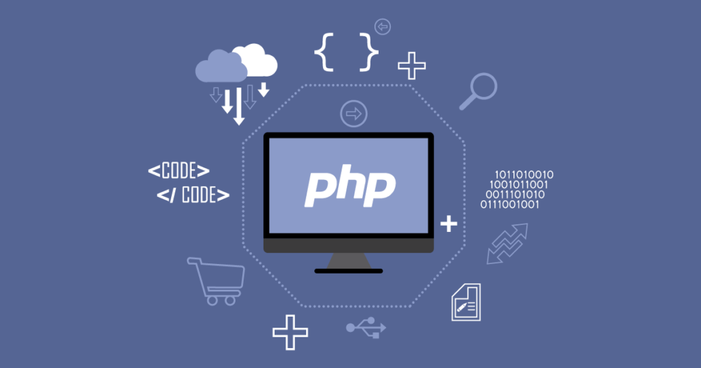

대표적인 서버 사이드 스크립트 언어로 전 세계 수많은 웹 시스템의 기반이 되는 언어. 비슷한 언어로는 ASP, JSP 등이 있다. C-like 문법을 사용하여, 소규모 웹 페이지 제작시 절차지향으로 작성하면 날코딩이 빠르다는 점에서 사용자, 사용처가 많다. 1995년 라스무스 러돌프가 처음 공개했고, 지금은 The PHP Group 이라는 단체에서 개발 및 관리를 맡고 있다.
php파일은 html파일과 달리 웹페이지를 요청할 때 마다 프로그램적으로 만들어지기 때문에 동적이다.
PHP 수업 정리
- dot operator(.)를 통해 문자열과 문자열을 연결시킬 수 있다.
- \"를 통해 큰따옴표를 표현할 수 있다.
- 변수는 $로 지정하고 echo를 이용할때 ".$var." 같은 방식으로 표현할 수 있다.
- PHP는 URL 파라미터를 이용하여 더 효율적으로 웹페이지를 개선할 수 있다.
파라미터가 각각 $address와 $name이 있다면 ?address=korea&name=hwahu 처럼 값을 URL에 넣을 수 있다.
- ?는 파라미터 입력 값이고 &는 다른 파라미터를 이어주는 역할을 한다.(모든 HTML에서)
- var_dump()를 이용하여 데이터 타입이나 bool을 알려줄 수 있다.
- php파일에서 가정문 문법과 반복문 문법 모두 C++과 구조가 매우 유사하다.
- form 역시 php에서 작동한다.